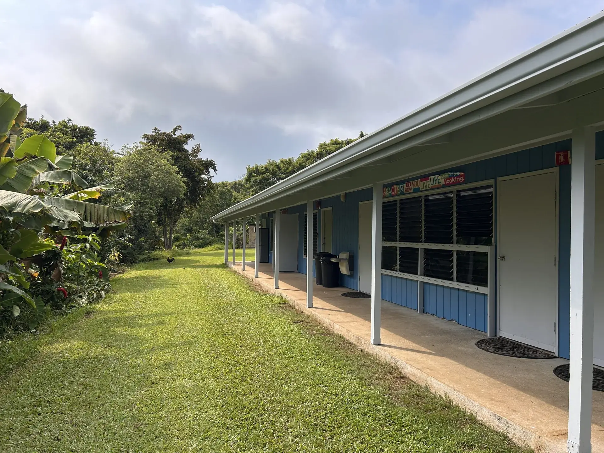
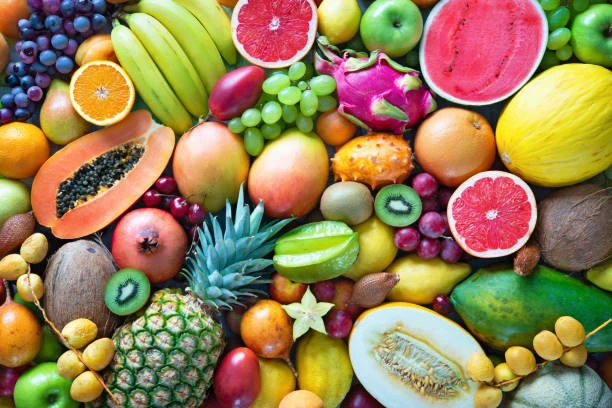
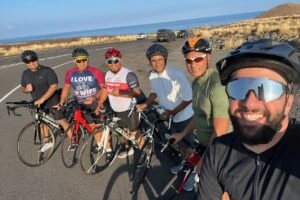

About Us
Kona Seventh-day Adventist Church is a welcoming family of faith on the Big Island, where we grow together in God’s Word and support one another in life’s journey
Church Services & Event Calendar
- Saturday:
- Sabbath School 9:30 am
- Worship Service 10:45 am
Our Beliefs
We believe in a God of love who calls us to live with hope, serve our neighbors, and prepare for Jesus’ return
Learn More About Our Beliefs
Kona Adventist Christian School (KACS)
At Kona Adventist Christian School, we believe true education nurtures the whole child – mind, body, and spirit – within a safe and supportive Christian environment. Serving students from kindergarten through 8th grade, our small, Christ-centered school in South Kona provides a safe, family-like environment where faith, creativity, curiosity, and character are all part of the learning journey.
Learn More About KACSOur Mission
Our mission is to share God’s love in Kona through worship, fellowship, and service that reflects the hope of the everlasting gospel. This mission comes to life through ministries of our church:
-
Prayer
We believe in the power of prayer to bring hope and healing. Our prayer ministry lifts up the needs of our church family, community, and beyond.
-

Praise & Worship
Through music, song, and dance, we celebrate God’s goodness and lead our church family into joyful, Spirit-filled worship.
-

Health
Promoting wholeness through practical ways to care for body, mind, and spirit, the health ministry shares Christ’s healing power with the community.
-

Men’s
Men gather for fellowship, encouragement, and service, building faith and leadership in the home, church, and community.
-

Women’s
Women grow together in faith, friendship, and discipleship, supporting one another and serving God with compassion.
-

Adventist Youth
Adventist Youth fosters spiritual growth, leadership, and community service, empowering young people to live and share Christ’s love.